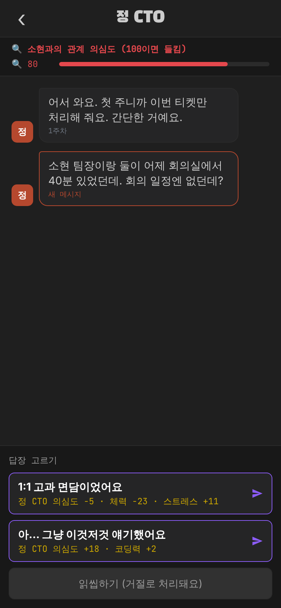

이소현 공략
스타트업 우리 팀 팀장 소현과의 비밀 사내연애. 동료 3명의 의심도, 위장 제목 비밀 데이트, 들키지 않는 법과 「완전 범죄」 확률
스타트업 우리 팀 팀장. 회사에선 「처음 보는 사이」, 메시지 제목은 늘 「[업무] …」. 계단에서만 반말하는 비밀 연인이에요.
- 스타트업 · 피봇랩스에 들어가면 첫 주에 연락이 와요(스타트업 제안: 12주차~, 코딩력 90).
- 동료 3명(정 CTO · 한 리드 · 막내 윤)에게 각자 의심도가 있고, 한 명이라도 100이면 들켜서 끝나요.
- 속도는 빨라요: 시뮬레이션(13주 입사, 데이트 3칸) 썸 27주 → 연애 34주 → 결혼 61주.
- 핵심은 딱 하나: 의심 메시지엔 무조건 자연스럽게 둘러대기. 그러면 시뮬레이션 20,000회에서 들킬 확률 0%, 「완전 범죄」 99.6%. 10번 중 1번만 실수해도 들킬 확률 41.8% 😱
소현과의 연애는 메신저 첩보물이에요 🕵️ 소현은 2주마다 「[업무] 회의록 검토 요청」 같은 위장 제목으로 비밀 데이트를 신청하고, 동료들은 3주마다 「둘이 무슨 사이야?」를 떠봐요. 대신 둘러대는 답은 체력과 스트레스를 꽤 먹으니 컨디션 관리가 이 루트의 진짜 난이도예요.
스포일러: 소현과의 첫 만남 사연
소현은 입사 전 주말에 소개팅으로 만났던 사람이에요. 첫 메시지가 「…진짜 그쪽이에요? 지난주 토요일 소개팅.」으로 시작해요. 그래서 회사에선 처음부터 「처음 보는 사이」로 지내기로 약속하죠.
만나는 조건#
| 항목 | 조건 |
|---|---|
| 회사 | 스타트업 · 피봇랩스 재직 중 (칭호 필요 없음. 「연쇄 창업가」로 퇴사한 상태면 안 와요) |
| 스타트업 가는 법 | 헤드헌터 「시리즈 A 투자를 받은 스타트업 포지션」: 12주차~, 코딩력 90, 스타트업 경력 없음. 대기업 사가의 지방 전보에서 「사표를 내고 스타트업으로 간다」도 있어요(승진·커리어) |
| 첫 메시지 | 스타트업에서 맞는 첫 주 마감 |
| 시작 호감도 | 10 |
| 잠금 | 그 회차에 이미 썸·연애 상대와 헤어졌거나 고백을 거절해 새 인연이 잠겼다면 첫 메시지가 아예 안 와요 |
| 첫 메시지 답 | 호감도 |
|---|---|
| 「알겠습니다, 팀장님. 처음 뵙겠습니다」 | +3 |
| 「애프터 신청한 거, 답 안 주셨잖아요」 ⭐ | +5 |
| 「그날 파스타는 맛있었는데요」 | +4 |
| 읽씹 | -5 |
고유 시스템: 비밀연애와 의심도#
- 의심도
- 정 CTO · 한 리드 · 막내 윤이 각자 60에서 시작, 0~100
- 의심 메시지
- 3주마다 3명이 1통씩(각자 15개, 다 쓰면 다시 섞어요). 첫 라운드는 소현을 만난 다음 주, 막내 윤의 「두 분 혹시 아는 사이예요? 👀」로 시작
- 자연스럽게 둘러대기
- 그 동료 의심도 -3 / -5 / -8 (대가: 체력 -10~-30, 스트레스 +5~+20)
- 어설픈 답
- +15~+25 (대신 코딩력·집중력 같은 작은 덤)
- 읽씹
- +30
- 비밀 데이트 실패
- 그 장면에 들어온 동료 의심도 +7~+12

들킬 확률 (시뮬레이션 20,000회)#
실제 주간 편성 함수와 실제 메시지 효과로, 입사 주별·플레이 방식별로 100주차까지 돌렸어요.
| 입사 | 플레이 | 들킴 | 완전 범죄 |
|---|---|---|---|
| 13주 | 항상 둘러대기 + 데이트 수락 | 0% | 99.6% |
| 13주 | 항상 둘러대기 + 데이트 거절 | 0% | 100% |
| 13주 | 10번 중 1번 어설픈 답 | 41.8% | 14.7% |
| 13주 | 10번 중 1번 읽씹 | 78.1% | 3.2% |
| 13주 | 반반 | 100% | 0% |
| 30주 | 항상 둘러대기 + 데이트 수락 | 0% | 98.5% |
| 50주 | 항상 둘러대기 + 데이트 수락 | 0% | 92.9% |
(「완전 범죄」 열은 100주차에 3명 모두 30 이하일 확률이에요. 늦게 들어갈수록 의심도를 60에서 내릴 시간이 줄어서 살짝 낮아져요.)
의심 메시지는 일상 메시지처럼 와서 놓치기 쉬워요. 읽씹 한 번이 +30이라 60에서 시작한 동료는 읽씹 2번이면 바로 들켜요. 3주마다 메신저를 꼭 확인하세요.
비밀 데이트 (2주마다)#

| 답 | 결과 |
|---|---|
| 수락 (70%) | 호감도 +8~+15 |
| 수락 (30%, 실패) | 동료 1명이 목격: 의심도 +7~+12, 호감도 +2~+5 |
| 「거절한다」 | 호감도 -15 |
| 읽씹 | 호감도 -30 |
비밀 데이트를 계속 거절하면 어떻게 될까요? 엔진 시뮬레이션 20판 중 0판이 썸까지 갔어요. 거절 -15가 쌓여 호감도 80에 못 닿거든요. 데이트 실패로 오르는 의심도는 둘러대기 한 번(-3~-8)으로 대부분 메워져서, 데이트는 받는 게 이득이에요. 데이트가 호감도의 주 수입원이거든요.
호감도 올리는 법#
| 출처 | 빈도 | 호감도 | 비고 |
|---|---|---|---|
| 첫 메시지 | 1번 | +3~+5 | 「애프터 신청한 거…」가 최고 |
| 일상 대사 | 매주 1통 (단계마다 20개) | +1~+2 | 좋은 답은 체력 -20~-30, 스트레스 +15~+25. 나쁜 답 -3~-5, 읽씹 -20 |
| 비밀 데이트 | 2주마다 | +8~+15 | 위 표 |
| 일정의 데이트 칸 | 썸·연애 중 | +2 × 속도 | 다른 히로인처럼 데이트 칸도 통해요 |
속도는 썸 전 1, 썸 0.3, 연애 1이에요. 썸 구간이 상대적으로 느려요.
썸 → 고백 → 연애#
- 썸 초대 (호감도 80, 아무와도 안 사귈 때)「[업무] 1:1 면담 일정 안내」 → 「지금 계단으로 갈게. 대답은 직접 할게」 (+5). 「팀장님이랑은… 안 될 것 같아요」는 떠나요.
- 고백 (100)「[업무] 최종 결재 요청」 「제목: 우리 사귀자」 → 「승인. 무기한으로」 또는 「나도 좋아해. 근데 내가 먼저 말하고 싶었어」 (둘 다 +5, 스트레스 -5). 「…반려할게요」는 떠나고 잠금.
결혼 조건#
데이트 진도 60 + 호감도 100 → 「[업무] 장기 계약 갱신 안내」 「기간은 평생」 → 「계약 갱신. 평생으로」 (+10, 스트레스 -8). 「아직은 준비가 안 됐어」는 -15에 다시 안 와요. 결혼해도 비밀은 계속이라 의심도 관리는 100주차까지예요.
동거 · 신혼 · 육아#
셋 다 없어요. 비밀 부부라 동거 제안·신혼·아기 제안이 오지 않아요. 또 다른 히로인과 같이 살고 있으면 소현은 연락하지 않아요.
엔딩 전부#
- 조건
- 100주차에 소현과 사귀는 중(미혼), 들키지 않고 스타트업에 남아 있음
- 보상
- 레어 카드팩 1
- 조건
- 진도 60 + 호감도 100 → 결혼 제안 수락 → 100주차에 결혼 중
- 보상
- 레어 카드팩 1
- 조건
- 소현 결혼 엔딩 조건 + 100주차에 동료 3명 의심도 모두 30 이하
- 보상
- 에픽 카드팩 1
실패 · 이별 조건#
| 상황 | 결과 | 피하는 법 |
|---|---|---|
| 동료 1명이라도 의심도 100 | 썸 전: 그냥 떠남 / 썸·연애: 마지막 메시지 → 끝 / 결혼: 이혼 | 둘러대기 100% |
| 스타트업을 떠남(이직 · 프리랜서 · 창업 퇴사) | 어느 단계든 끝. 썸 이상은 작별 메시지, 결혼이면 이혼 | 이직 제안 화면의 빨간 「소현과의 관계가 끝나요」 경고를 보면 거절 |
| 비밀 데이트 읽씹 / 일상 대사 읽씹 | -30 / -20 | 매주 확인 |
| 연애 중 데이트 칸 0번 | -30 + 서운함 메시지 | 데이트 1칸 이상 |
| 호감도 0 | 「팀장이랑 팀원으로 돌아가요」 / 이별 메시지(붙잡기 30%) | 읽씹 안 쌓기 |
| 다른 히로인과 동거 | 소현 연락 끊김 | 소현 루트면 다른 히로인 집 X |
스포일러: 들켰을 때 결말
들키면 소현은 「내가 팀장으로 남으려면 이게 맞아」라며 정리하고, 결혼 중이었다면 그 주에 사표를 내요. 스타트업을 떠날 때는 「[업무] 마지막 결재 완료」 쪽지와 함께 반지가 택배로 돌아와요… 😢
추천 공략 루트#
- 1~12주코딩력 90 만들기(클스·커트, 기술).
- 12주~스타트업 헤드헌터 「제안을 받아 본다」 → 수락. 이후 이직 제안은 전부 거절.
- 입사 첫 주「애프터 신청한 거, 답 안 주셨잖아요」 (+5).
- 3주마다의심 메시지 3통 모두 첫 번째(둘러대기) 답. 체력 여유를 위해 휴식·커피 확보.
- 2주마다비밀 데이트 수락, 매주 일상 대사 좋은 답.
- 썸 → 연애일정에 데이트 3칸 이상. 다른 히로인 썸 초대는 거절(소현 썸 초대는 아무와도 안 사귈 때만 와요).
- 청혼 수락 후집안일 1칸, 둘러대기는 100주차까지 계속.
자주 묻는 질문#
- 의심도는 어디서 봐요?
- 소현 채팅 맨 위에 「🔍 동료 의심도 (100이면 들킴)」 게이지가 3명 몫으로 떠요. 의심 메시지의 답에도 「정 CTO 의심도 -5」처럼 변화가 미리 표시돼요.
- 둘러대기가 체력을 너무 먹어요
- 3주마다 3통이 한꺼번에 와서 체력 -30~-90이 한 주에 몰릴 수 있어요. 그 주 일정에 휴식을 넣거나 소모품을 써 주세요. 체력이 아까워 어설픈 답을 고르는 순간 의심도가 +15~+25 튀어요.
- 소현은 카사노바·문어발 인원에 들어가요?
- 아니요. 어장 확률 계산에는 들어가지만, 카사노바·문어발·단체방 폭로 인원 수에는 안 들어가요.